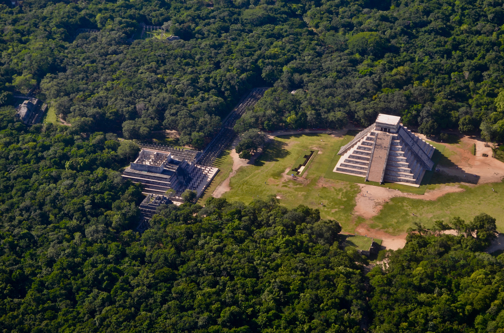
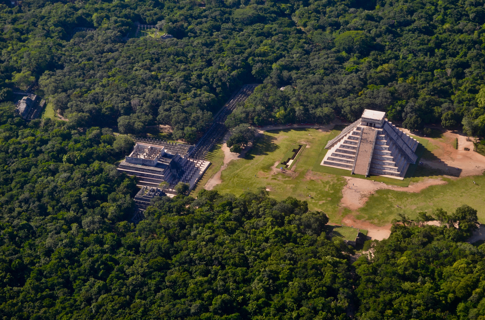
Чичен-Ица — один из самых больших, величественных и наиболее хорошо восстановленных монументов эпохи майя. Знаменитые пирамиды и храмы Чичен-Ицы — самые известные из древних памятников полуострова Юкатан. Прогуливаясь среди каменных платформ, пирамид и церемониальных залов, начинаешь лучше понимать и ценить высокую цивилизацию далекой древности.
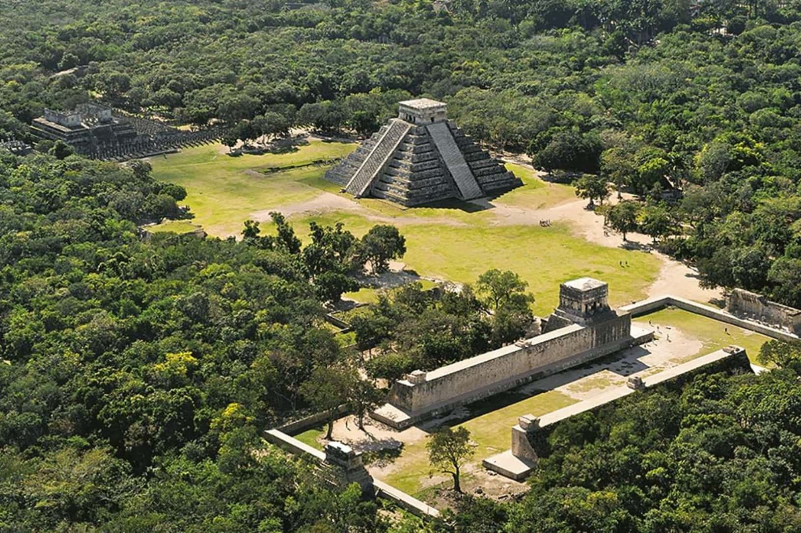
Древний город Чичен Ица, в переводе обозначающий «колодец племени Ица», основан в 455 году народностью Ица, живущим в регионе. С VII по X столетие здесь жили племена майя, но земли захватило воинственное племя толькетов, превратив Чичен Ицу в столицу. Майя, собрав войско, в 1178 году вернуло город.
В период расцвета к XII веку на территории Чичен Ицы на площади 10 квадратных километров жило 30 000 человек. На пике развития в 1194 году на процветающий город обрушились эпидемии болезней и голод, и жители покинули дома. Город стремительно разрушался, на его землях пасли скот.
В XVIII веке с приходом сюда испанцев в городе начались исследования и археологические раскопки. В середине XX века правительство Мексики решило восстановить Чичен Ицу до первоначального вида, и сейчас город – популярнейшая достопримечательность Мексики.
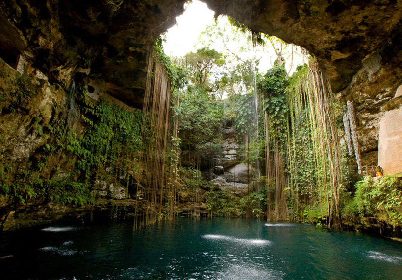
Одним из факторов, которые привели к созданию поселения в Чичен-Ице, является наличие там нескольких сенотов. Это большие естественные воронки, которые служат источником воды. Учитывая, что северный Юкатан является засушливым районом, и что в его внутренней части нет наземных рек, сеноты сыграли важную роль в выживании людей. Самым известным сенотом в Чичен-Ице является Сенот Саградо-де-Чичен-Ица или священный сенот, образованный разрушенной пещерой в известняковой породе.
Как следует из названия, Священный сенот был не просто источником воды, но и местом ритуального значения. Согласно некоторым источникам испанского периода, майя приносили человеческие жертвы и предметы роскоши в качестве подношения Чааку, богу дождя майя. Со временем исследователи нашли доказательства этих утверждений. Было найдено большое количество артефактов, в том числе керамики, золотых предметов и изделий из нефрита. Кроме того, были найдены человеческие останки, на которых были обнаружены раны, соответствующие ритуальным жертвоприношениям.
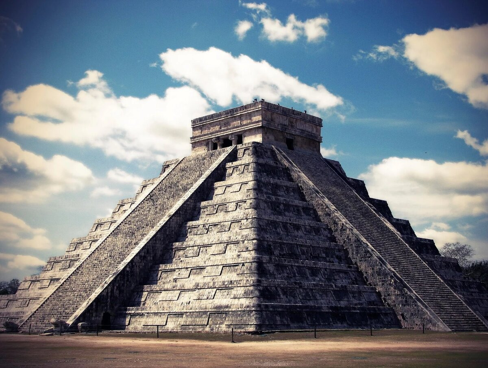
В честь Пернатого Змея, верховного бога, майя соорудили грандиозную пирамиду. Строение расположено на площади 18 га, в основании – квадрат со стороной 55,5 м, высотой 30 м. По центру сторон – широкие крутые лестницы снизу до верха с 91 ступенью.
Каждую лестницу завершает змеиная голова, лежащая на земле. Ступенчатую пирамиду лестница делит на две части, так что 18 ступеней соответствуют 18 месяцам календаря майи. На гранях пирамиды – 9 террас, по одной на каждую область царства: так майя представляли загробный мир.
В 3 часа дня пирамида освещена так, что лестница отбрасывает тень, напоминающую змеиный хвост. Когда солнце движется, создается ощущение, что хвост длиной 37 метров движется вниз.
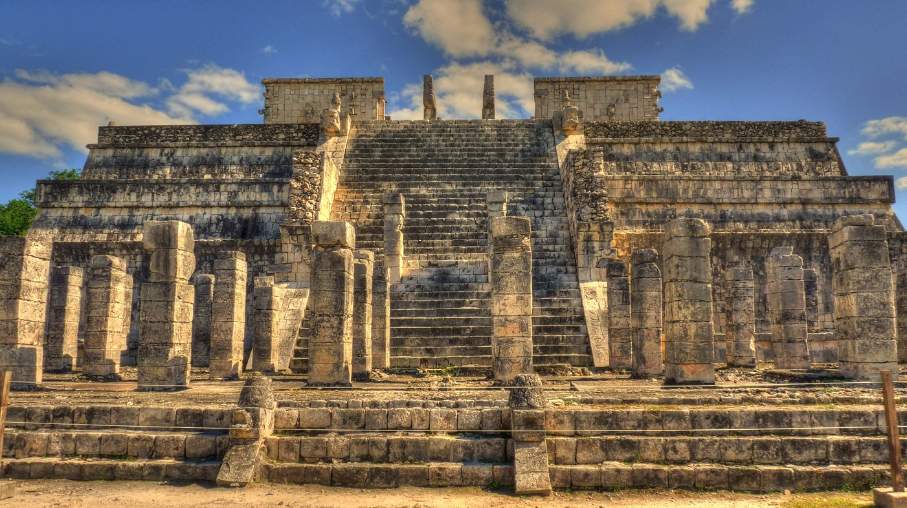
Справа от пирамиды Кукулькана – Храм воинов, возведенный наверху 11-метровой четырехъярусной пирамиды с основанием 40 на 40 метров. Пирамиду окружает узорчатая колоннада. Перед лестницей, ведущей в храм, – 60 резных колонн в форме змей головами вниз, хвост устремлен в небо.
На стенах храма вырезаны изображения священных животных, венчает храм фигура верховного бога Кукулькана. Каменный алтарь для жертвоприношений поддерживают 4 гигантских атланта. У главного входа – статуя идола Чак Мооля с блюдом, на которое во время жертвоприношений жрецы складывали сердца людей.
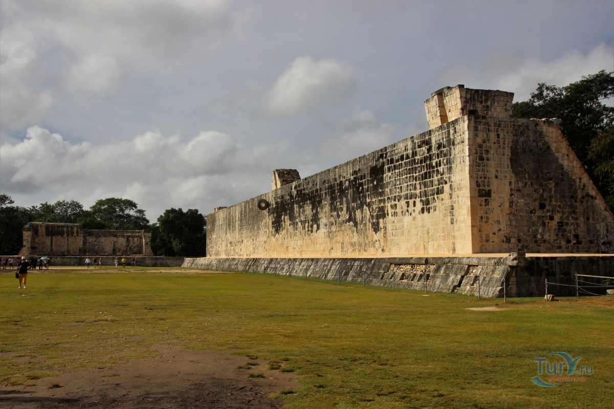
В древнем городе установили 12 площадок для ритуальной игры в мяч. В 864 году появился стадион 135 м в длину и 68 м в ширину, обрамленный 12-метровыми вертикальными стенами с закрепленными на них каменными кольцами на высоте 8 метров. На поле, разделенном пополам, играли две команды, находящиеся каждая на своей половине. Цель игры – пробросить 4-килограммовый каучуковый мяч в каменное кольцо.
По правилам игры, касаться мяча руками и ногами нельзя. Бить мяч разрешалось плечами, локтями, бедрами, коленями. Передавать мяч с одного края на другой для набора очков. Игра длилась часами, потому что попасть в кольцо – неимоверно трудное дело. За попадание в кольцо немедленно присуждалась победа, часто победившую команду определяли по количеству набранных очков.
Тяжелая и жестокая игра заканчивалась человеческими жертвоприношениями. Капитана проигравшей команды обезглавливали на стадионе, принося в жертву богу Солнца. По другой версии – головы лишали капитана выигравшей команды, потому что богам отдается только лучшее.
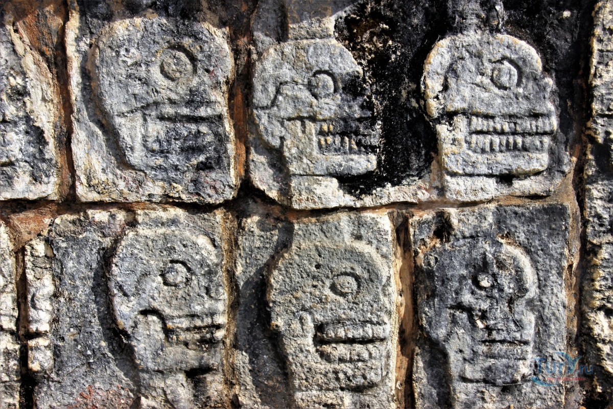
Справа от поля для игры в мяч – Стена черепов, Т-образная платформа, стены которой покрыты рельефными изображениями черепов На каменную стену развешивали черепа принесенных в жертву людей, а на специальный шест насаживали в ряд отрубленные головы врагов.
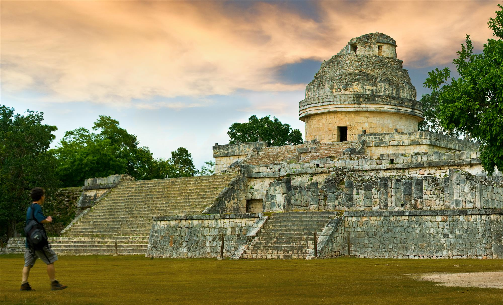
Обсерватория Зль Караколь (в переводе «улитка») – астрономическое древнее поселение. Название сооружение получило потому, что внутри – спиральная лестница, ведущая с первого уровня башни на второй, напоминающая раковину улитки. Обсерватория построена в 904 году, в период расцвета цивилизации майя.
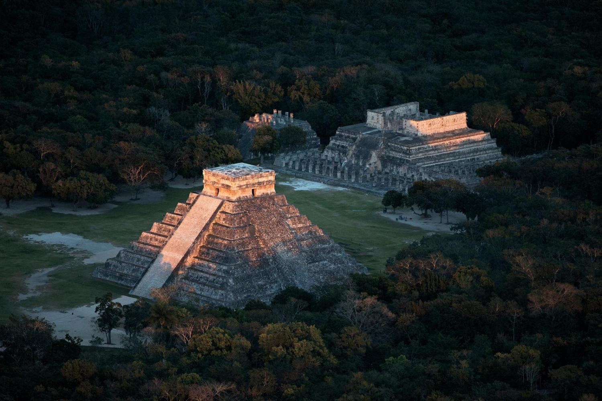
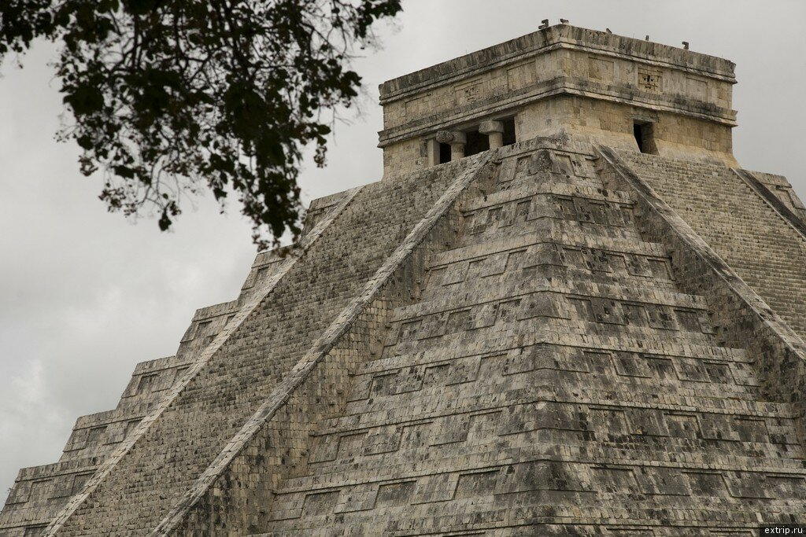
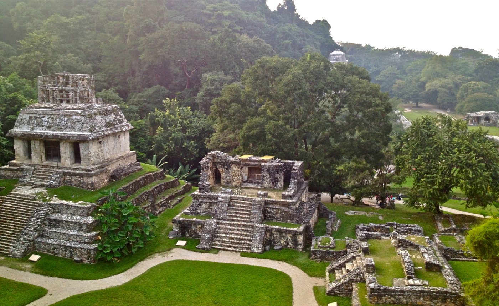
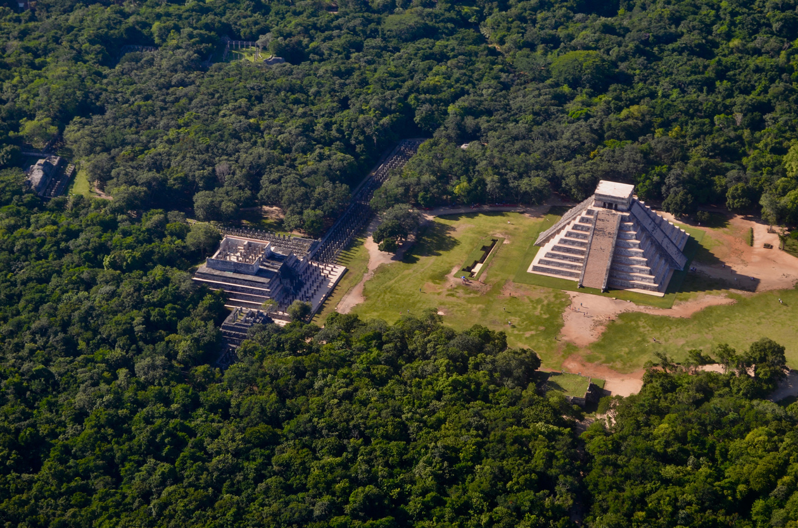